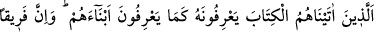
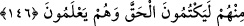

olduğu hakkında ne kadar kesin deliller getirirsen getir, onlar kibir ve inadlarından
ötürü asla sana tâbi olmazlar. Bu hüküm inanmayacakları Allah’ın ilminde kesinleşmiş
bir gurup hakkındadır. Çünkü onlardan inanan ve Kâbe’ye yönelenler bulunmaktadır.
“Sen de onların kıblesine dönecek değilsin.” Çünkü Yahûdîler kendi aralarında:
“Eğer Muhammed bizim kıblemiz üzerinde sâbit kalsaydı, bunun beklediğimiz
peygamber olacağını umardık.” diyorlar ve onun yine kendi kıblelerine döneceğini
sanıyorlardı. Onların bu istek ve arzularını kesmek için Peygamberimiz’in bir daha
onların kıblelerine dönmeyeceği bildirilmiştir.
“Onlar da birbirlerinin kıblesine dönmezler.” Yahûdîler Beyt-i Makdis’i,
Hıristiyanlar ise güneşin doğduğu doğu tarafını kıble yapmışlardır. Her gurup üzerinde
bulunduğu şeye o kadar sıkı bağlıdır ki, bunların beraberce sana muvâfakat etmeleri söz
konusu olmadığı gibi, kendi aralarında da uyuşmaları da mümkün değildir. Hak üzere
olan sahip olduğu delîl sebebiyle görüşünden vazgeçmemekte, bâtıl üzere olan ise
cür’et ve inâdının şiddetiyle bâtılından ayrılmamaktadır.
Sana Kâbe’nin kıble olduğu husûsunda kesin vahiy geldikten sonra, eğer sen îmân
ederler ümidiyle ve idâre etme maksadıyla onların isteklerine uyup Beyt-i Makdis’e
doğru namaz kılmaya devam edersen zulmedenlerden olursun. Bu farazî şart cümlesi,
doğru olan şey üzere devama teşvik etmektedir.
Bu âyet, muhatablarını nefsin arzularına uymaktan sakındırıp korumak istemektedir.
Ehl-i kitabın isteklerine uyması mümkün olmayan Hz. Peygamber (s.a.) bile bundan
nehyolunmaktadır. “Böyle bir şey farz-ı muhal vukû bulacak olsa sen zâlimlerden
olursun.” buyrularak ümmet uyarılmaktadır. Hz. Peygamber hakkında bu ifâdeler
kullanıldığına göre biz hâlimizi bir düşünelim. Nitekim Mesnevî’de gelmiştir:
Kalb ile îmânın taze olsun, dil ile ikrârın değil.
Ey içinde hevâsı taze olan kişi,
Taze hevâ, taze îmân demek değildir.
Bu hevâ denilen kapı kilidinden başkası değildir.
146. Kendilerine kitap verdiklerimiz onu (o kitaptaki peygamberi), öz oğullarını
tanıdıkları gibi tanırlar. Buna rağmen onlardan bir gurup bile bile gerçeği gizler.
Kitaplarını okuyup anlayabilen ehl-i kitap âlimleri, Tevrât’ta yazılı bulunan
vasıflarıyla Hz. Peygamber’i (a.s.) kendi oğullarını tanıdıkları gibi tanımaktaydılar.
Oğullarından şüphe etmedikleri gibi, Onun peygamber olduğu husûsunda da hiçbir
şüpheleri yoktu. Âyette özellikle erkek çocuklar zikredilmiştir. Çünkü babalar, erkek
çocuklarını daha çok severler ve onları kız çocuklardan daha iyi tanırlar. Erkek